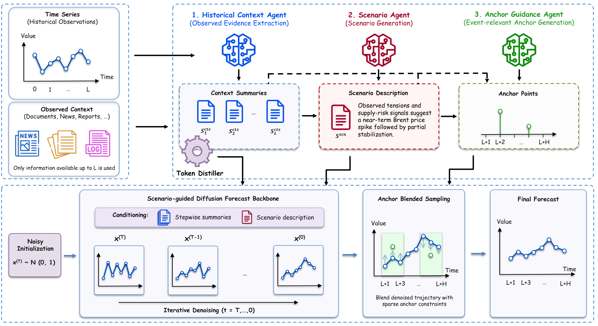
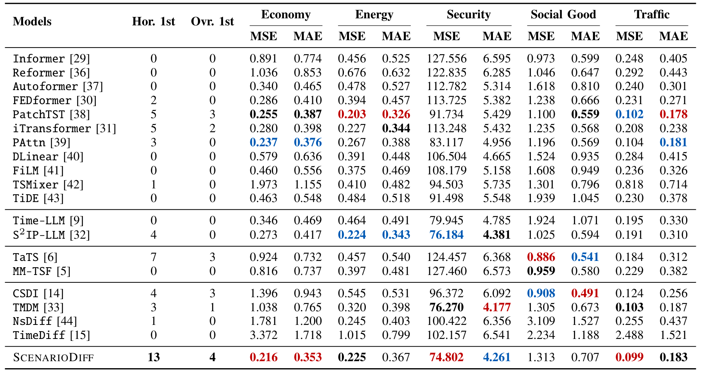

Abstract
Textual context such as news, reports, and logs can provide valuable signals for time series forecasting, especially when future dynamics are driven by external events that are not yet visible in historical values. Existing multimodal forecasting methods often either ask large language models (LLMs) to predict numerical values directly or fuse text and time series implicitly, making contextual influence difficult to interpret and control. We propose SCENARIODIFF, a hierarchical contextual reasoning framework for multimodal time series forecasting under noisy and weakly aligned documents. SCENARIODIFF organizes contextual information into three levels: a Historical Context Agent extracts stepwise evidence from raw documents, a Scenario Agent produces a qualitative scenario description for the forecast horizon, and an Anchor Guidance Agent generates sparse anchor points for event-relevant future regions. These structured signals condition a Multimodal Diffusion Transformer, while Anchor Blended Sampling locally refines generated trajectories without retraining. Experiments on the Time-MMD benchmark show that SCENARIODIFF is especially effective in event-driven domains, demonstrating the value of explicit hierarchical scenario guidance for multimodal time series forecasting. Our full implementation is available at https://github.com/ttb06/ScenarioDiff.
Scenario-level guidance
An additional challenge is that contextual text may describe not only smooth trend continuation, but also event-driven deviations such as policy interventions, outages, or abrupt demand shifts. Capturing such cases requires future-oriented hypotheses that can guide a numerical forecaster without asking an LLM to directly output numbers. It also requires a mechanism for translating coarse textual expectations into localized constraints when abrupt changes are likely.
Hierarchical contextual reasoning
In this work, we propose SCENARIODIFF, a hierarchical contextual reasoning framework for MTSF. The key idea is to organize contextual information into three complementary levels of guidance, each serving a different role in guiding the forecast. First, a frozen Historical Context Agent compresses raw documents into stepwise context summaries aligned with the observed history, grounding the model in document-level evidence. Second, a frozen Scenario Agent synthesizes the historical series and these summaries into a scenario description, which serves as a qualitative prior over the forecast horizon. Third, an Anchor Guidance Agent converts the available context into sparse anchor points, providing time-localized guidance for future regions where abrupt changes are likely. This hierarchy separates past evidence, future hypotheses, and local trajectory constraints, making contextual influence more explicit and modular than implicit fusion.

Multimodal Diffusion Transformer and Anchor Blended Sampling
We instantiate the forecaster as a Multimodal Diffusion Transformer, which models future trajectories through iterative denoising conditioned on the structured signals produced by the agents. The stepwise context summaries and scenario description guide the base diffusion process, allowing the model to combine numerical history with scenario-level textual evidence without asking LLMs to directly output numerical forecasts. To make anchor points actionable, we introduce Anchor Blended Sampling, an inference-time refinement procedure that locally edits anchor-relevant regions using a distance-to-band objective while preserving non-anchor regions through blended diffusion. Thus, anchor points act as soft local constraints rather than hard overrides, encouraging event-consistent trajectories without retraining the base forecaster.
SCENARIODIFF / THE FILM
When the news
changes the forecast.
From an event report to a scenario, sparse anchors and a future trajectory. Follow three Vietnam-based stories in healthcare, smart cities and energy.
03 EVENTS / 03 PATTERNS OF CHANGE
Three events. Three forecasts.
Events are marked on the plots. Anchor guidance refines local regions; the forecast retains a visible gap from ground truth.
Event reports are sourced. Operating histories, ground-truth references and forecast paths are illustrative; they are not customer measurements or model evaluation.
Results
Main results on Time-MMD
Table I reports average MSE and MAE over prediction horizons across the five Time-MMD domains. Overall, SCENARIODIFF achieves the strongest horizon-level performance, with the largest number of MSE/MAE wins across horizons and domains. The gains are most evident in event-driven domains, especially Economy and Security, while SCENARIODIFF also shows competitive performance on Traffic. These results suggest that noisy documents become more effective for forecasting when transformed into explicit scenario-level signals, rather than fused as unstructured text. Compared with numerical-only and LLM-prior baselines, SCENARIODIFF benefits from using LLM agents for contextual reasoning instead of direct numerical prediction. The agents extract historical evidence, generate scenario descriptions, and produce anchor points that guide a dedicated probabilistic forecaster. This separation of historical context, scenario-level guidance, and anchor-based refinement leads to stronger performance when text contains actionable event signals.

Probabilistic forecasting
Table II reports CRPS for representative diffusion-based probabilistic forecasting models. SCENARIODIFF achieves the best event-domain average CRPS, indicating that hierarchical scenario guidance can also improve predictive distributions when textual evidence is informative. The improvement is not uniform across all domains, as strong numerical or diffusion-based baselines remain competitive in some settings. This domain-dependent behavior supports our main motivation: scenario-level guidance is most beneficial when external text provides actionable signals about future dynamics.
| Model | Econ. | Ener. | Sec. | Soc. | Traf. | Event Avg. |
|---|---|---|---|---|---|---|
| CSDI | 0.231 | 0.138 | 0.805 | 0.109 | 0.043 | 0.392 |
| TMDM | 0.190 | 0.099 | 0.511 | 0.156 | 0.030 | 0.267 |
| NSDiff | 0.317 | 0.104 | 0.852 | 0.375 | 0.064 | 0.424 |
| TimeDiff | 0.436 | 0.197 | 0.883 | 0.266 | 0.251 | 0.506 |
| SCENARIODIFF | 0.094 | 0.112 | 0.584 | 0.189 | 0.036 | 0.263 |